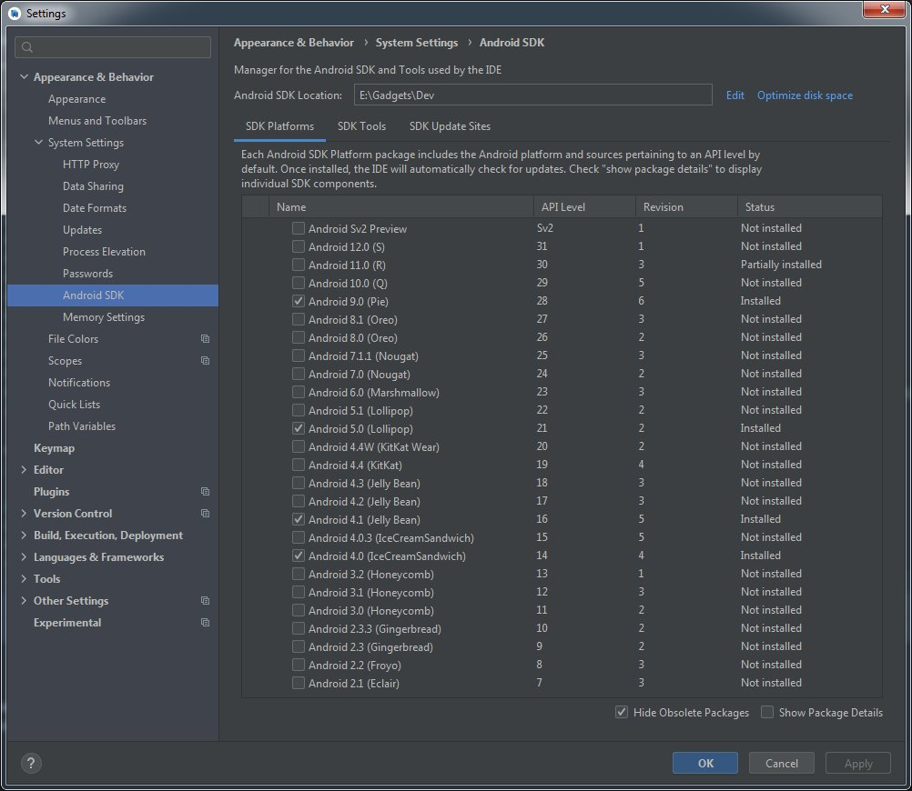
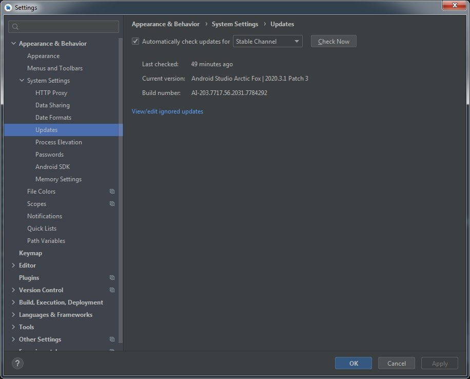
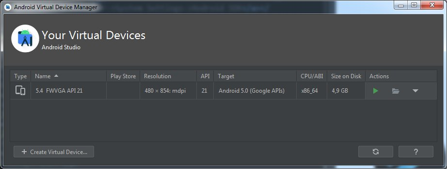
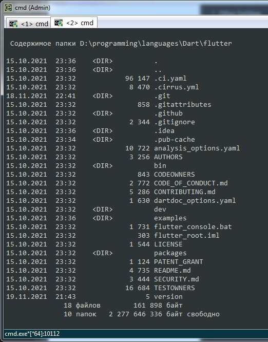
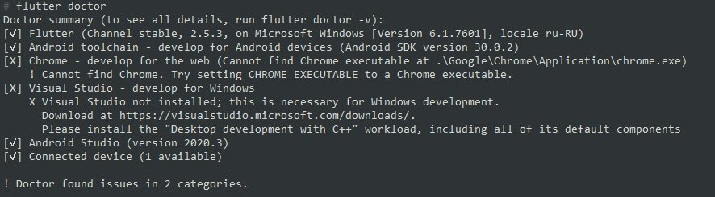
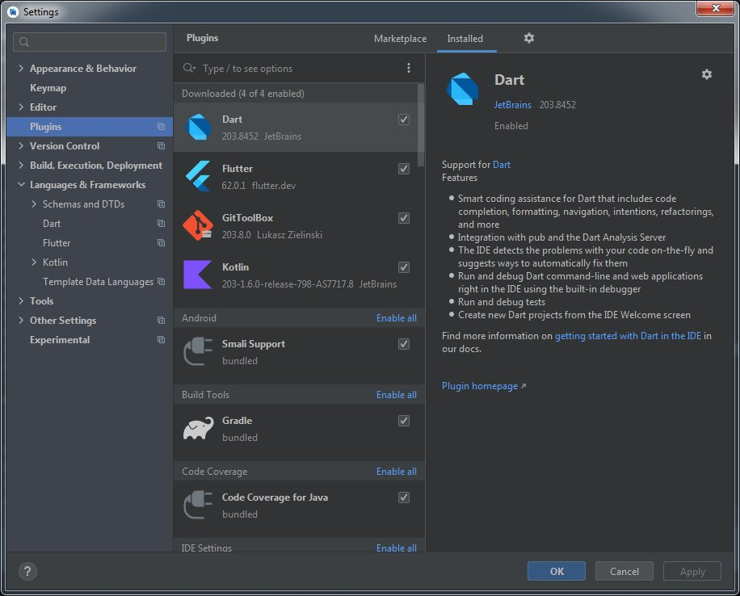

Для начала нужно подготовить инструментарий. Для этого скачиваем Android Studio, Android SDK и Flutter SDK.
Android Studio качаем здесь:
Android SDK скачиваем через Android Studio:
Flutter SDK качаем здесь:
После установки Android Studio и последующей закачки Android SDK апдейтим все фичи Android Studio - git, gradle, kotlin, commandline tools etc (при наличии доступа к сети Android Studio выдаст уведомления). Закачиваем Android SDK под нужную версию Android (можно несколько версий).
Скрины примера настроек:

Если что-то не так первым делом зайдите сюда и сделайте апдейт:

У меня, к примеру, были проблемы с AVD Manager'ом и апдейт заканчивался ошибкой из-за банальной причины - не хватало свободного пространства на диске.
Далее настраиваем AVD Manager.
AVD Manager находится здесь:
Скрин примерных настроек:

Т.е. нам необходимо в AVD менеджере создать виртуальный смартфон (планшет), на котором будем тестировать приложение.
Создавайте устройство под архитектуру CPU x86_64, т.к. оно будет более стабильно работать, в отличие от arm
После этого можно закрыть Android Studio. Далее настроим Flutter.
После установки Flutter SDK запускаем коммандную строку и переходим в папку с установленным SDK:

Затем указываем путь к Android Studio:
flutter config --android-studio-dir "C:\Program Files\Android\Android Studio"
Указываем путь к Android SDK:
flutter config --android-sdk "F:\PC\programming\Android_SDK"
После чего принимаем лицензионное соглашение:
flutter doctor --android-licenses
После всех этих действий нужно проверить настройки Flutter:
flutter doctor
На скрине видно, что Flutter настроен на разработку под Android Studio (не настроено под Chrome и Visual Studio):

Теперь запускаем Android Studio и переходим в настройки Plugins и скачиваем плагины Dart и Flutter:
